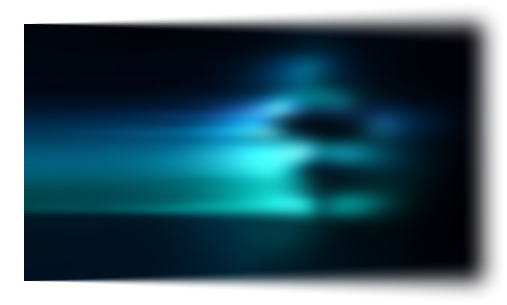
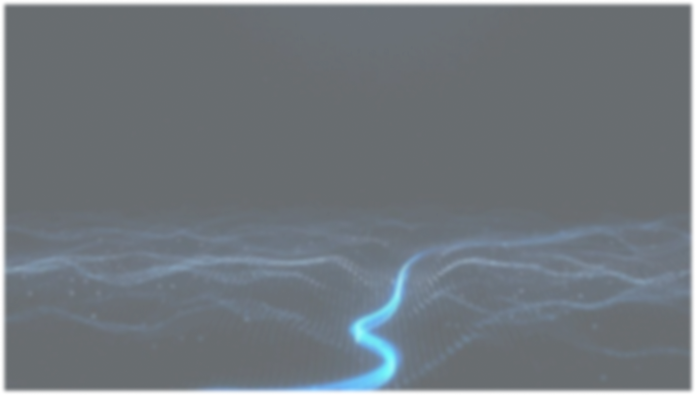
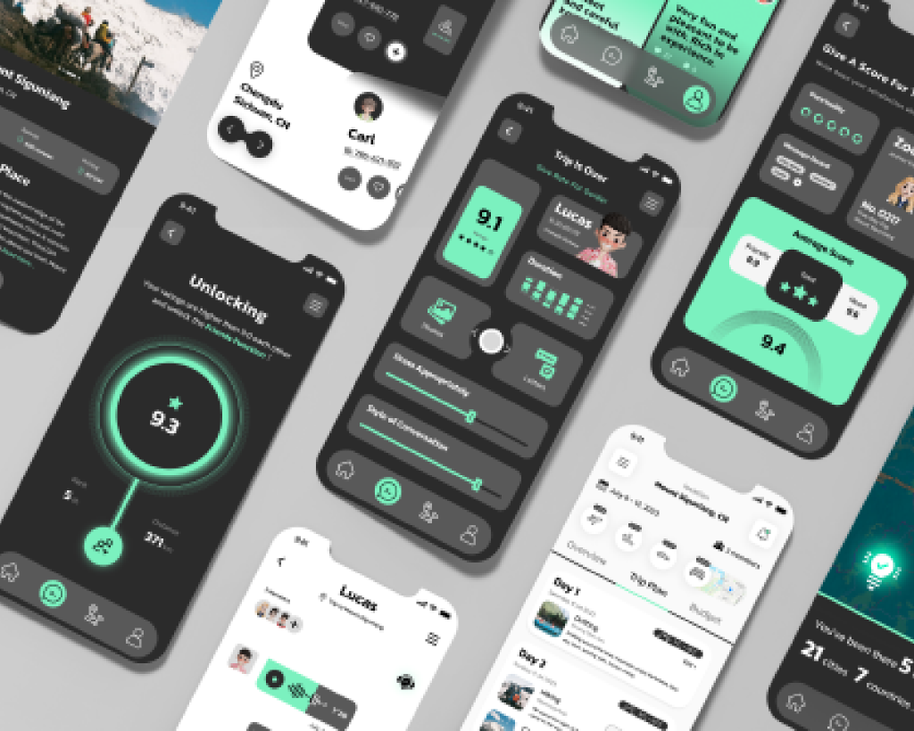
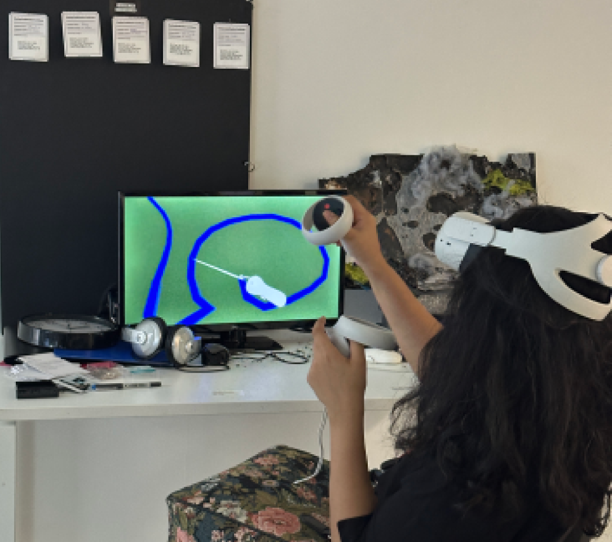
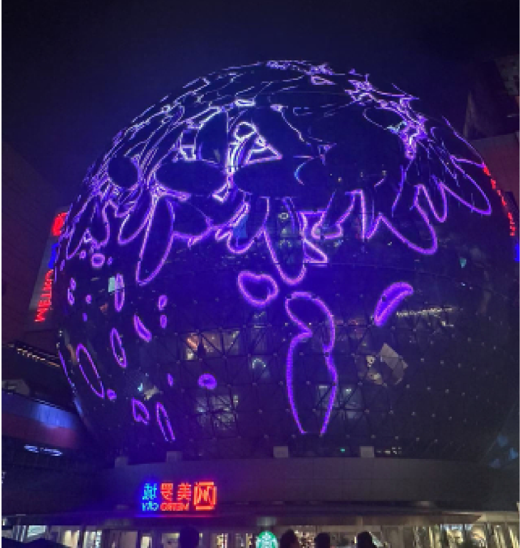

Research to strategy
用户研究、服务蓝图、用户旅程、产品分析，把复杂场景转化为明确设计机会。
UX / Interaction / Service Experience
我是周琳，一名关注交互设计、用户体验与多媒体体验的设计师。 我的作品横跨智能座舱 HMI、医疗服务系统、移动端产品、VR 游戏与数字疗愈互动。

用户研究、服务蓝图、用户旅程、产品分析，把复杂场景转化为明确设计机会。
信息架构、任务流、原型设计、HMI 多屏协同，让体验逻辑可以被测试和落地。
UI 视觉、3D、VR、TouchDesigner 与 AIGC，把概念做成具有情绪和场景感的表达。
Selected work
这里按照“项目类型”筛选。每个卡片都可以点开查看更完整的案例摘要， 后续可以继续扩展成独立详情页。
Design process
Visual archive




Profile
我曾在蔚来汽车参与服务流程设计，在淘米网络参与平面与 UI 视觉设计。 我的工具栈覆盖 Figma、Sketch、Adobe Creative Suite、Blender、Unity、TouchDesigner、 Arduino、p5.js、Processing 与 AIGC 创作工具。